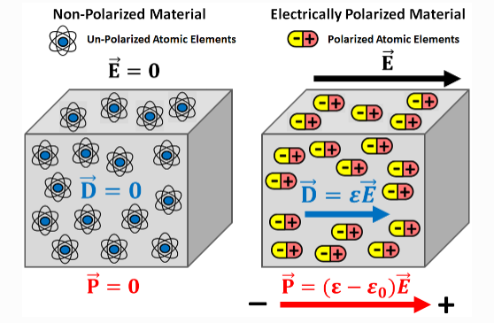
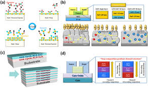

한양대학교 나노광전자학과 석사 과정생으로, HfO₂ 기반 FeFET 및 산화물 반도체 채널
소자를 연구하고 있습니다. 특히 MFS/MIFS 구조 설계, 게이트 일함수와
인터페이스 엔지니어링을 통해 메모리 윈도우(MW)를 향상시키고,
retention과 endurance를 동시에 확보하는 것을 목표로 하고 있습니다.
Education
M.S. in Nanophotonics Engineering, Hanyang University (2024– )
B.S. in Nanophotonics Engineering, Hanyang University (2024)
Keywords
FeFET / FeRAM / eNVM
Oxide Semiconductor TFTs
Pulse-based Characterization
Device Reliability Physics
Research Interests
Ferroelectric Field-Effect Transistors (FeFETs)
HfO₂ 기반 강유전체를 게이트 절연층으로 적용한 FeFET 소자를 연구하고 있으며,
MFS/MIFS 구조 설계를 통해 메모리 윈도우(Memory Window),
PGM/ERS 효율, retention 및 endurance 특성을 향상시키는 데
초점을 두고 있습니다.

Polarization behavior of ferroelectric materials under applied electric field.
HZO ferroelectric phase stabilization
Work-function engineering of gate electrodes
Memory window and reliability analysis
Oxide Semiconductor TFTs
a-IGZO 및 a-ITZO 기반 산화물 반도체 TFT를 제작하고,
채널 조성, 산소 공공 및 계면 트랩이 소자 성능과
신뢰성에 미치는 영향을 분석하고 있습니다.

Schematic illustrations of oxide semiconductor TFT structures and
fabrication processes.
a-IGZO / a-ITZO hetero-channel engineering
Carrier transport and defect state analysis
Mobility, SS, and contact resistance
Neuromorphic & In-Memory Computing Devices
FeFET 및 charge-trap TFT 기반 소자를 시냅스 소자로 활용하여,
뉴로모픽 컴퓨팅 시